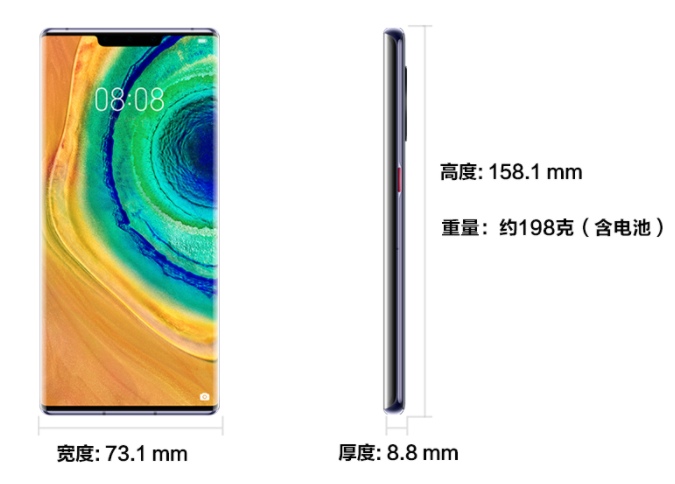

屏幕尺寸：6.53英寸*
屏幕色彩：1670万色，DCI-P3广色域
屏幕类型：OLED
分辨率：FHD+ 2400 x 1176像素*
*显示屏采用圆角设计，按照标准矩形测量时，屏幕的对角线长度是6.53英寸（实际可视区域略小）。
*该分辨率对应标准矩形，实际屏幕有效像素略少。
支持防尘抗水（IP68）
说明：本手机并非专业防水手机，在正常使用状态下可防溅、抗水、防尘，在受控实验室条件下经测试，其效果在GB/T 4208-2017（国内）/IEC 60529（海外）标准下达到 IP68
级别。防溅、抗水、防尘功能并非永久有效，防护性能可能会因日常磨损而下降。请勿在潮湿状态下为手机充电；请参阅使用手册了解清洁和干燥说明。由于浸入液体而导致的损坏不在保修范围之内。
*IP68中防水条件为（1）无流动清水，水深1.5米；（2）试验时间30分钟；（3）水温与产品温差不大于5摄氏度。
后置摄像头
超感光徕卡电影四摄：
4000万像素电影摄像头（超广角，f/1.8光圈）+ 4000万像素超感光摄像头（广角，f/1.6光圈，支持OIS）+ 800万像素长焦摄像头（f/2.4光圈，支持OIS）+ 3D深感摄像头，支持自动对焦
*不同拍照模式的照片像素可能有差异，请以实际为准。
变焦模式：
3倍光学变焦（3倍变焦为近似值，镜头焦段分别为18mm，27mm，80mm）、5倍混合变焦（三个摄像头通过不同组合实现各种环境下出色的5倍变焦效果）、30倍数字变焦
后置闪光灯：
后置双LED闪光灯
防抖模式：
OIS/AIS
照片分辨率：
最大可支持 7296 x 5472像素
*不同拍照模式的照片像素可能有差异，请以实际为准。
摄像分辨率：
最大可支持 3840 x 2160像素；支持720p@7680fps（基于AI插帧算法技术实现），720p@1920fps，1080p@960fps超级慢动作视频
*不同拍摄模式的视频像素可能有差异，请以实际为准。
拍摄功能：
超高速摄影、超高清夜摄、延时摄影、超大广角、大光圈虚化、双景录像、超级夜景、人像模式、专业模式、慢动作、全景模式、黑白艺术、流光快门、HDR、智能滤镜、水印、文档矫正、AI摄影大师、动态照片、4D预测追焦、笑脸抓拍、声控拍照、定时拍照、连拍
前置摄像头
摄像头：
3200万像素，f/2.0光圈，支持固定焦距
3D深感摄像头
*不同拍照模式的照片像素可能有差异，请以实际为准。
变焦模式：
固定对焦
照片分辨率：
最大可支持 6528 x 4896像素
*不同拍照模式的照片像素可能有差异，请以实际为准。
摄像分辨率：
最大可支持 2288 x 1080像素
*不同拍摄模式的视频像素可能有差异，请以实际为准。
拍摄功能：
人像模式、全景模式、趣AR、延时摄影、动态照片、智能滤镜、水印、笑脸抓拍、自拍镜像、声控拍照、定时拍照
